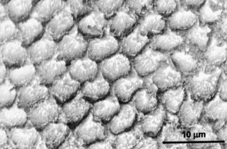
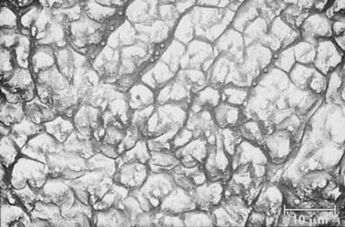
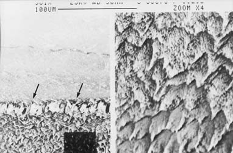
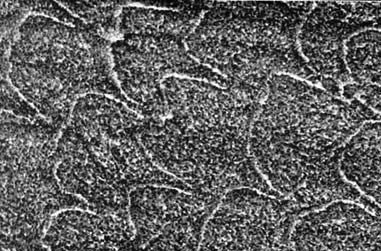
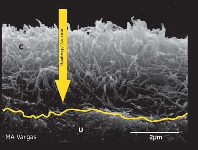
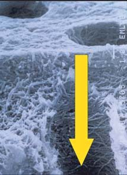
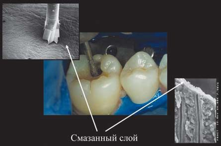
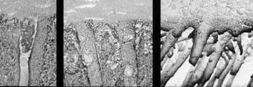
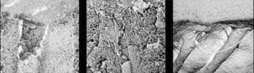
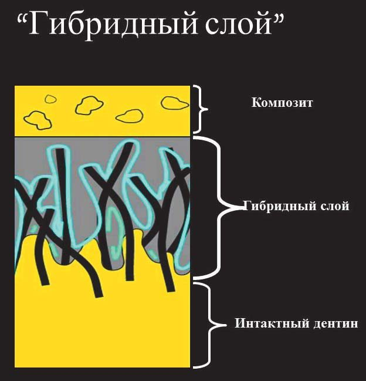

Матеріали Дентсплай Сірона · журнал «ДентАрт» 2020 №2
Сучасні адгезивні техніки
Modern Adhesive Techniques
Відновлення зубів пломбувальними матеріалами має багаторічну історію. Бурхливий розвиток хімічної науки на рубежі ХІХ-ХХ століть дав стоматологам широкий спектр нових матеріалів. Сучасний прогрес у технологіях відновлення зубних тканин пов'язаний з появою у 30-х роках ХХ століття мономерів, що полімеризуються, в основному метакрилових. Сучасна практика пломбування та протезування зубів заснована на адгезивній техніці, що базується на поліфункціональних метакрилових смолах. Основне гасло адгезивної стоматології: «Гармонія естетики і мінімальне втручання». Сучасна адгезивна стоматологія дозволяє створювати естетичні реставрації без значного видалення твердих тканин зубів, робити фіксацію непрямих реставрацій, відновлювати зубні тканини після ендодонтичного лікування.
Адгезивні технології зробили революцію у відновній стоматології завдяки двом основним причинам:
- Сучасні адгезиви можуть повністю запечатати дентин, запобігаючи проникненню мікроорганізмів у пульпу зуба.
- При виготовленні непрямих реставрацій із застосуванням адгезивів немає потреби в забезпеченні макроретенції, тобто у створенні піднутрень і великих паралельних поверхонь.
Саме перехід від макроретенції до мікроретенції дозволив розширити показання прямої техніки естетичної реставрації, а також сприяв виникненню нових ортопедичних конструкцій. Наприклад, вініри були немислимі ще 50 років тому.
Перші адгезивні поліфункціональні мономери для з'єднання з тканинами зуба запатентувала компанія Gebr. De Trey AG у 1949 р. Цей мономер і його модифікації набули широкого застосування у вмісті сучасних комерційних стоматологічних адгезивів, композитів та склоіономерних цементів. Справжнім проривом в адгезивній техніці відновлення зубів стало застосування кислотного протравлювання емалі, впровадженого у стоматологію з промислового виробництва доктором Michael Buonocore в 1955 р. Протравлювання зубної емалі кислотами дозволило істотно збільшити міцність з'єднання поверхні зі смолами, що полімеризуються.
Кожному стоматологові-практиктикові слід орієнтуватися на довготерміновий успішний результат, і для цього потрібне чітке розуміння кожного етапу лікування. Слід пам'ятати, що основна мета — це створення герметизму субстрату (зуба) і композиту. Без створення рівномірного гібридного шару не може бути довготермінової реставрації без подальших ускладнень. Сучасна естетична стоматологія неможлива без правильного уявлення про адгезивну технологію. Знання термінології, принципів класифікації та вимог до сучасних адгезивних систем, показань і протипоказань до їх застосування, механізму зв'язків адгезивного шару, методики роботи з адгезивами різних типів, переваг і недоліків адгезивних систем, аналізу помилок і ускладнень, що виникають при роботі з цими системами, та способів їх профілактики дозволяють стоматологові надавати висококваліфіковану допомогу своїм пацієнтам.
Використання з'єднувальних (адгезивних) агентів — обов'язковий технологічний етап проведення прямих і непрямих реставрацій зубів, ортодонтичного лікування. Недотримання технології застосування адгезивної системи призводить до порушення з'єднання композиту з тканинами зуба, що проявляється виникненням крайової щілини, мікробною інвазією, забарвлюванням країв реставрації, післяопераційною чутливістю, виникненням рецидивного карієсу, а іноді й ушкодженням пульпи.
Завдяки досягненням у галузі стоматології адгезивні системи було виділено в окремий клас матеріалів, використовуваних у реставраційній стоматології. Жоден композитний матеріал нині не використовується без адгезивної системи. Адгезивна техніка сприяє максимальному збереженню тканин зуба, дозволяє домогтися надійного і довготермінового з'єднання стоматологічних матеріалів з емаллю і дентином, ізолювати пульпу зуба від дії подразників усіх типів. Асортимент адгезивних систем сьогодні дуже великий і постійно поповнюється, що вимагає від лікаря певних знань і підвищення кваліфікації в галузі адгезивної стоматології.
Коротка історія розвитку адгезивних систем
- 1955 рік — уперше запропоновано застосовувати адгезивні технології у стоматології.
- Середина 1960-х — поява на ринку силантів для герметизації фісур і композитних полімерів, які використовують адгезивну технологію.
- Кінець 1960-х — припущення про можливість з'єднання з дентином.
- 1980-і — широке визнання адгезивів з протравлюванням і змиванням.
- 1990-ті — прийняття концепції «гібридного шару». Поява багатокомпонентних та однокомпонентних адгезивних систем.
Завдання адгезивної системи полягає у зв'язуванні гідрофобного композиту з гідрофільними тканинами зуба за допомогою створення так званого гібридного шару з використанням біфункціонального молекулярного з'єднання, один кінець якого, гідрофільний, з'єднується з тканинами зуба, а другий — з композитом. Однак для того, щоб таке з'єднання відбулося, потрібно створити шорстку поверхню, забезпечити її змочування і мати текучий матеріал, здатний проникнути в мікропористу поверхню. Такі вимоги є основою мікромеханічної ретенції.
Слід розуміти різницю в адгезії до емалі та дентину, зумовлену їх гістологічною будовою. Шорсткість поверхні емалі та дентину досягається за допомогою обробки цих структур 30-40% ортофосфорною кислотою. Однак при протравлюванні кислотою на поверхні емалі осаджується кальцій-фосфат, який слід видалити водним струменем. Водний струмінь видаляє і залишки кислоти, яка перешкоджає з'єднанню адгезиву з тканинами зуба. Після протравлювання внаслідок різного ступеня розчинення емалевих призм та міжпризматичної речовини утворюється мікроутримуючий рельєф (неоднакова просторова орієнтація).
Розрізняють три типи протравлювання емалі:
- 1 тип — переважно розчиняються емалеві призми;
- 2 тип — протравлюється міжпризматична речовина;
- 3 тип — змішаний, при якому протравлюються емалеві призми і міжпризматична речовина.
У результаті кондиціонування збільшується площа поверхні за рахунок створення мікроутримуючого рельєфу. Велике значення в практиці має спосіб обробки емалі, оскільки поверхня емалі має різну орієнтацію емалевих призм. У центрі пучка призми розташовані паралельно, а по краях — перпендикулярно. Для ефективного з'єднання слід отримати гарне прикріплення саме в зоні перпендикулярних призм. Тому при препаруванні емалі фінішним бором виконуються скоси. Немає потреби в скосах лише на оклюзійній поверхні жувальної групи зубів.
Емаль є найбільш мінералізованою структурою організму, вона складається на 95% за масою і на 86% за об'ємом з неорганічних речовин, переважно з гідроксиапатиту. Вміст води в емалі мінімальний, вона міститься здебільшого в складі гідратованих кристалів. Органіка емалі — це розчинні і нерозчинні білки, незначний обсяг ліпідів та вуглеводів. В емалі зазвичай є фториди, максимальна концентрація яких міститься у поверхневому шарі емалі і менше — у внутрішніх її шарах. Це має велике значення, оскільки фторапатити слабкорозчинні, і поверхневий, нестертий шар емалі стійкіший до кислотного протравлювання. Ось чому сила адгезії до відпрепарованої і кондиціонованої емалі більша, ніж до невідпрепарованої, і становить близько 30 МПа. Крім того, наприклад, зовнішній шар емалі тимчасових зубів має апризматичну структуру, тому тимчасові зуби гірше піддаються протравлюванню, ніж постійні. Кондиціювання емалі при техніці тотального протравлювання слід робити не менше 30 секунд, що призводить до розчинення шару емалі товщиною близько 10 мкм (фото 1-4).





Щоб знайти спосіб ефективного склеювання з дентином, стоматології потрібно було немало часу. Причина полягає в абсолютно іншій структурі дентину в порівнянні з емаллю. Головна частина дентину — це дентинні канальці, утворені пери- та інтертубулярним дентином. Відросток одонтобласта занурений у рідину, що заповнює дентинний каналець, стінки якого утворені високомінералізованим або перитубулярним дентином. Дентинні канальці з'єднані між собою менш мінералізованим дентином, міжканальцевим або інтертубулярним дентином. Поскільки дентинні канальці спрямовані до центру зуба, їх щільність на різних рівнях дентину нерівномірна. Найбільше дентинних канальців (близько 45000 на мм²) спостерігається безпосередньо біля пульпи, а на периферії в зоні дентиноемалевого з'єднання їх кількість зменшується суттєво — до 20000 на мм².
Завдяки рідині, що міститься в канальцях, і наявності колагену дентин є відносно вологою структурою, і чим ближче до пульпи, тим більше рідини в дентинних канальцях. Найменший рух рідини всередині дентинного канальця, зумовлений, наприклад, висушуванням, зміною температури чи осмотичного тиску, призводить до виникнення болю. В результаті тривалого механічного або хімічного подразнення дентин може склерозуватися за рахунок відкладення фосфатів кальцію всередині канальця завдяки відросткам одонтобластів. Однак багаторазовий кислотний вплив може розчинити ці захисні «пробки». Усередині дентинних канальців спостерігається дещо більший тиск у порівнянні з тканинним тиском у порожнині зуба, внаслідок чого при відкритих дентинних канальцях витік пульпарної рідини спрямований назовні, що є захисним бар'єром для токсинів, яким необхідно подолати цей потік, щоб потрапити глибше. Ця ж властивість має значення для фіксації адгезиву всередині дентинних канальців.
Часто виникають питання щодо депульпованих зубів. Чи може адгезія в таких зубах бути на належному рівні? У депульпованих зубах гібридний шар створити навіть легше, ніж у вітальних, і це зумовлено зміною потоку рідини в дентинних канальцях, що детально буде пояснено нижче. Розглядаючи дентин як субстрат для адгезії, слід приділити увагу особливостям змазаного шару, що утворюється при препаруванні дентину. Цей пористий шар являє собою суміш гідроксиапатиту і пошкодженого колагену товщиною 1-7 мкм. Змазаний шар блокує дентинні канальці, перешкоджаючи витоку дентинної рідини, з одного боку, і контакту між дентином та адгезивом — з другого (фото 5-7).
Розвиток адгезивних систем передбачав кілька шляхів впливу на змазаний шар. Перший шлях — повне видалення змазаного шару шляхом кондиціонування дентину кислотою з оголенням колагенових волокон і дентинних канальців. Другий шлях — модифікація цього шару. Третій шлях — селективне протравлювання емалі і модифікація дентину. Таким чином, у сучасній реставраційній стоматології існують три шляхи для поліпшення прикріплення до дентину: техніка тотального протравлювання, самопротравлююча техніка і техніка селективного протравлювання (фото 8, 9).





Склад сучасних адгезивів
Практично всі сучасні адгезивні системи складаються з праймера, адгезиву або їх комбінації.
Праймер — компонент адгезивної системи, призначений для просочування структур протравленого дентину та емалі з утворенням гібридного шару (рис. 1). Це рідина, що складається з дуже маленьких молекул гідрофільних мономерів і розчинника. Гідрофільні мономери — це низькомолекулярні метакрилати (HEMA, PENTA, 4-META і т. д.) з вираженими гідрофільними властивостями і низькою pH. Ці властивості в комбінації з розчинником дозволяють гідрофільним мономерам проникати вглиб структур протравленого дентину.
У комбінованій адгезивній системі друга складова — це гідрофобні мономери, високомолекулярні метакрилати високої в'язкості (Bis-GMA, UDMA, TEGDMA і т. д.), такі ж, як і в самих композитах. При полімеризації ці молекули зшиваються і утворюють органічну матрицю як основу для прикріплення реставраційного композиту.
Третя складова адгезивної системи — це розчинник. Призначення розчинника полягає в забезпеченні вологості дентину, видаленні надлишків води з поверхні і доставці молекул мономера в товщу колагенової мережі. В адгезивних системах використовуються гідрофільні розчинники, що поділяються на органічні (ацетон і спирт, частіше етанол) та неорганічні (вода). Розчинник також сприяє збереженню рідкої консистенції праймера.
Ацетон на сьогодні не є найчастіше використовуваним розчинником: хоча він ефективно видаляє надлишки води з поверхні дентину й емалі, що полегшує проникнення полімерної основи в товщу колагенової мережі і сприяє утворенню міцного зв'язку, але в той же час він має суттєвий недолік — неможливість запобігання колапсу колагенових волокон у разі нанесення на пересушений дентин.
Вода менш летюча, ніж ацетон, і це призводить до її затримки в товщі колагенових волокон, що перешкоджає просочуванню праймером та інфільтрації бонда, погіршує якість гібридного шару, а точніше, при надлишку води гібридний шар взагалі може бути відсутнім. Адгезивні системи зі спиртовими розчинниками менш чутливі до дотримання техніки нанесення і більш ефективні у видаленні надлишків води з поверхні, ніж системи з ацетоном як розчинником.
До складу адгезивної системи входить також наповнювач — частинки неорганічної речовини (SiO2, акросил) різного розміру (мікрометри або нанометри), певна кількість яких міститься у праймері та бонді. Наповнювач підвищує міцність і стабільність гібридного шару, полегшує проникнення мономера в обвапнені структури дентину, перешкоджає проникненню вологи з дентинних канальців. До компонентів адгезивної системи належать також стабілізатор, який перешкоджає мимовільній взаємодії мономерів і їх передчасній полімеризації, що визначає термін придатності системи, та ініціатор фотополімеризації (камфорохінон).
Деякі системи можуть містити і компонент, що виділяє фтор — органічні молекули з інтегрованими іонами фтору. При контакті з дентинною рідиною може відбуватися гідроліз із виділенням іонів вільного фтору, який вбудовується в кристалічну структуру гідроксиапатиту, що підвищує карієсрезистентність тканин зуба. Однак після полімеризації матеріалу виділення іонів фтору відбувається в дуже низьких концентраціях.
Види адгезивних систем у поколіннях
Сьогодні на ринку величезна кількість адгезивних систем. Модифікації матеріалів стали називати «поколіннями», що відображає хронологічний розвиток адгезивних технологій. У цій класифікації не завжди легко розібратися, тому, напевно, логічніше класифікувати адгезивні системи за кількістю компонентів, які потрібні для виконання процедури адгезії (рис. 2).
«Трикомпонентні», або традиційні, системи четвертого покоління
Характеризуються необхідністю виконання трьох окремих етапів: протравлювання, праймування і бондинг. Ці системи в техніці тотального протравлювання з'явилися одними з перших, і вони є «золотим стандартом» в адгезії до дентину, але не щодо сили з'єднання з тканинами зуба.
«Двокомпонентні» системи
Цю групу матеріалів можна розподілити на дві підгрупи:
- До складу системи входить окремий протравлюючий агент, а праймер і бонд об'єднані в одному компоненті. Це системи п'ятого і восьмого покоління. Їх часто називають «системами в одному флаконі». При роботі з ними стоматологи нерідко стикаються з тими ж труднощами, що властиві трикомпонентним системам, однак робота з ними більш ергономічна.
- Протравлюючий агент і праймер з'єднані в один компонент, а бонд — компонент окремий. Це системи шостого покоління. Такі адгезиви прийнято називати «системами із самопротравлюючим праймером». Праймер протравлює дентин, одночасно інфільтруючись у нього. Поверхня після цього не потребує очищення, що зменшує тривалість клінічної процедури, а також знижує технологічну складність процесу, оскільки відпадає необхідність контролювати зволоженість дентину.
«Однокомпонентні» системи сьомого покоління
У таких системах всі елементи зібрані в один компонент. Таким чином, кондиціонування, праймування і бондинг поверхні тканин зуба відбуваються одночасно. Ці системи мають деяку перевагу перед описаними раніше системами, оскільки не потребують змішування. Переваги двокомпонентних та однокомпонентних самопротравлюючих систем перед системами тотального протравлювання полягають у відсутності потреби окремого етапу кондиціонування і висушування обробленої поверхні, немає небезпеки пересушування дентину чи його зайвого протравлювання. Самопротравлюючі адгезивні системи в залежності від рівня їх кислотності формують гібридний шар, аналогічний тому, який утворюється при застосуванні систем тотального протравлювання, або менший за глибиною, коли гідроксиапатит не видаляється повністю, а ретенція забезпечується також завдяки хімічній взаємодії між мономерами та кристалами гідроксиапатиту.
При використанні таких систем лікарів-стоматологів часто цікавить, що відбувається з кислотою після нанесення адгезиву на зубні тканини... Існує три механізми інактивації кислоти:
- Частина кислоти випаровується з розчинником.
- Кислота вступає в хімічну реакцію нейтралізації з гідроксиапатитом зубних тканин.
- Властивість кислотності проявляється тільки в певному стані мономерів, після перетворення їх на полімери кислотність також змінюється.
Клінічні особливості застосування адгезивів
Розглядаючи адгезивні системи з точки зору клініциста, слід розуміти їх потенційну дію:
- збереження власних структур зуба;
- зміцнення ослаблених дентину та емалі;
- зниження крайової мікропроникності;
- зниження післяопераційної чутливості.
Техніка препарування зуба, ізоляція робочого поля, чітке дотримання протоколу застосування адгезивної системи — це умови, які необхідні для створення якісного гібридного шару. Ефективність кожної адгезивної системи залежить від правильності її використання, у відповідності з інструкцією виробника. Однак є загальні правила для будь-якої техніки, нехтування якими призводить до порушень технології, а відтак ускладнень у стоматологічному лікуванні.
Зазначимо недоліки самопротравлюючих систем. До складу таких систем на додаток до мономерів входить вода, що змушує виробників з особливою увагою ставитися до стабільності препарату протягом терміну зберігання через нижчу стабільність, ніж у систем тотального протравлювання, а лікареві доводиться довше видаляти розчинник після нанесення адгезиву.
Ще одним недоліком є прикріплення самопротравлюючих адгезивних систем до каріозного та склерозованого дентину. Дослідження засвідчили, що ефективніші у таких випадках адгезивні системи, що працюють у техніці тотального протравлювання. Це пов'язано з тим, що склерозований дентин має у своєму складі більшу кількість мінеральних речовин, на які повинен впливати кислотний праймер. Цю проблему можна вирішити шляхом повного видалення шару склерозованого дентину, що не завжди добре з клінічної точки зору.
Велике значення має і товщина змазаного шару. Самопротравлююча адгезивна система повинна проникнути через весь змазаний шар, не видаляючи його, а модифікуючи. Є пряма залежність товщини змазаного шару від ступеня зернистості алмазного бору, а також тиску, що чиниться на препаруючий інструмент. Чим товщий змазаний шар, тим нижча ефективність прикріплення до такої поверхні через самопротравлюючу адгезивну систему.
Крім цього, міцність з'єднання з емаллю при застосуванні самопротравлюючих адгезивних систем нижча, ніж при використанні систем тотального протравлювання. Емаль має бути обов'язково механічно оброблена з широким скосом. До хімічного складу цих адгезивів, окрім мономерів, входить вода, що робить украй важливим етап висушування після його нанесення. Неповне видалення змазаного шару, а лише його модифікація могли б бути перевагою, якби не залишкова кислотність, яка продовжує часткове протравлювання дентину навіть після полімеризації та утворення гібридного шару. Утворюються зазори між колагеновими волокнами, активується фермент металпротеїназа, який руйнує ці волокна, що призводить до руйнування гібридного шару. Однак повністю відмовлятися від цих систем, можливо, не варто. Їм надають перевагу, коли є небезпека пересушування каріозних порожнин з великими ділянками дентину.
Далі буде…
Література
- Paul SJ, Welter DA, Ghazi M, et al: Nanoleakage at the dentin adhesive interface vs microtensile bond strength. Oper Dent 24:181–188, 1999.
- Eick JD, Robinson SJ, Chappell RP, et al: The dentinal surface: its influence on dentinal adhesion: part III. Quintessence Int 24:571–582, 1993.
- Tam LE, Pilliar RM: Fracture surface characterization of dentin-bonded interfacial fracture toughness specimens. J Dent Res 73:607–619, 1994.
- Fortin D, Swift EJ, Jr, Denehy GE, et al: Bond strength and microleakage of current adhesive systems. Dent Mater 10:253–258, 1994.
- Heintze SD, Bluck U, Gӧhring TN, et al: Marginal adaptation in vitro and clinical outcome of Class V restorations. Dent Mater 25:605–620, 2009.
- Yoshiyama M, Sano H, Ebisu S, et al: Regional strengths of bonding agents to cervical sclerotic root dentin. J Dent Res 75:1404–1413, 1996.
- Kwong SM, Cheung GS, Kei LH, et al: Micro-tensile bond strengths to sclerotic dentin using a self-etching and a total-etching technique. Dent Mater 18:359–369, 2002.
- Heintze SD, Rousson V: Clinical efectiveness of direct class II restorations — a meta-analysis. J Adhes Dent 14:407–431, 2012.
- Peumans M, Kanumilli P, De Munck J, et al: Clinical effectiveness of contemporary adhesives: a systematic review of current clinical trials. Dent Mater 21:864–881, 2005.
- Lawson NC, Robles A, Fu CC, et al: Two-year clinical trial of a universal adhesive in total-etch and self-etch mode in non-carious cervical lesions. J Dent 43:1229–1234, 2015.
- Sanares AME, Itthagarun A, King NM, et al: Adverse surface interactions between one-bottle light-cured adhesives and chemicalcured composites. Dent Mater 17:542–556, 2001.